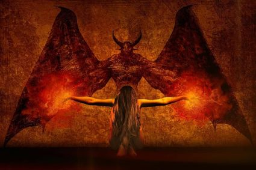
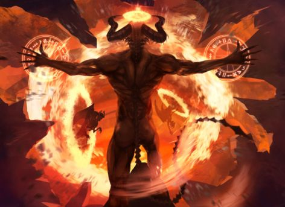
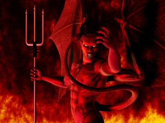
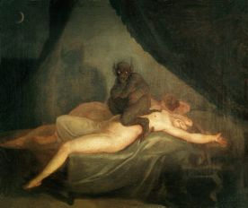

Demonas – folklore, mitologijoje ir religijoje dvasia (gera arba pikta), padedanti ar trukdanti žmogui vykdyti jo sumanymus. Dažnai įsivaizduojama, kad demonus galima iššaukti ir valdyti.
Įvairiose religijose – tai dvasinė būtybė, užimanti tarpinę padėtį tarp dievo ir žmogaus, dažniausiai veikianti žmogaus nenaudai. Krikščioniškuose mituose demonas – piktoji dvasia, velnias. Angelai, sukilę prieš Dievo valią ir virtę velniais, demonais. Viduramžiais su miegančiomis moterimis santykiaujantys demonai vadinami inkubais, su vyrais – sukubais. Šie demonai užmušdavo savo aukas, išsiurbę visą gyvybės energiją. Moterys nuo inkubų galėdavo susilaukti palikuonių, kurie dažniausiai būdavo išsigimę.
Senovės graikų mitologijoje demonų buvo daug. Senovės graikų religijoje iš pradžių – beasmenė jėga, vėliau – dievams pavaldi dvasia. Demonas tapatinamas su romėnų genijumi, dvasia globėja, vadovaujančia žmogaus veiksmams ir mintims.
Žinoma, tai yra visi žodžiai ir, be to, kiekvieno asmens asmeninė problema. Tačiau panašūs pasakojimai ir mitai, legendos, perduotos iš kartos į kartą, baisi pasakos, dažnai yra panašios kai kuriose interpretacijose. Visi jie sumažinami iki vieno vardo - demonologijos. Demonologijos mitai yra labai seni. Kai kurie iš demonų, kuriuos galima surasti iš jo, pavardės tapo bendruosius daiktavardžius, kiti įkvėpė literatūros, vizualiųjų menų ir teatro personažus. Misticizmas apskritai visada įkvėpė kūrėjus. Tai didžiulis sluoksnis, kuriame senas gali būti rodomas nauja šviesa tiek kartų, kiek jums patinka, ir kiekvieną kartą nustebinkite. Be to, demonologija įprasta prasme gali būti laikoma kultūros paveldu, kaip ir kitais mitais. Demonologija, be kita ko, apima pragaro demonų sąrašą. Vardai paprastai išdėstyti abėcėlės tvarka arba demoniškoje hierarchijoje.

Įdomi dilema apie sielų buvimą tarp demonų: pagal krikščionišką demonologiją pats pavadinimas neabejotinai rodo, kad, žinoma, tai daroma. Kiti šaltiniai savo nuomonėje šiuo klausimu šiek tiek skiriasi.
Pavyzdžiui, yra teorija, kad nukritę angelai yra aukščiausias demonų, svarbiausių ir galingiausių, rangas. Likusi dalis yra žmonių, kurie pateko į pragarą ir virto blogio dvasia, sielos. Pagal šią teoriją paaiškėja, kad demonai vis dar turi sielą.
Kita teorija kyla iš to, kad demonas yra iš demono, kad jis yra siela. Nes jie turi juodas akis - nieko atspindi sielos veidrodį. Teorijos paaiškinimas yra tas, kad demonai nežino, kaip jausti. Dėl visų šių priežasčių žmogus, kuris nuėjo į pragarą dėl savo nuodėmingumo, ten visam laikui kenčia, ir jam neįmanoma išeiti net demono pavidalu.
Kaip matote, yra daug klausimų apie demonologiją. Beveik visi jie turi neaiškių atsakymų. Ar yra kažkas aiškios apie šį pseudoscience? Keista, tai yra vardai. Taigi, pragaro demonai yra žinomi, kurių vardų sąrašą sukūrė demonologai: tarp jų yra ir tų, kurie iš literatūros žinomi net ir tiems, kurie apskritai toli nuo mistikos jų gyvenime, yra tie, kurie yra tiesiogiai susiję su Biblijos įvykiais, ir yra tai gali būti gana stebina dėl savo neįprastumo ir tuo pat metu išsamią istoriją. Žemiau yra hierarchinis demonologijos demonų sąrašas.
Išvardyti yra pagrindiniai demonai, užimantys aukščiausias vietas pragare ir dažnai užimantys žmogaus formą. Dauguma jų yra nukritę angelai. Tai yra labai galingi demonai. Lotynų kalbos pavadinimų sąrašas dubluojamas rusų ir hebrajų kalbomis.
Be kritusių angelų, vis dar yra gyvūnų formos demonai. Pagrindiniai - Behemotas ir Leviatanas - didžiuliai Dievo sukurti monstrai. Pasak legendos, galiausiai jie turi kovoti kovoje ir nužudyti vieni kitus.
Hipopotamas ir leviatanas yra būtybės, kurios dažniau vadinamos monstrais, o ne demonais, ir yra įrodymas apie Dievo kūrinių nesuvokimą.
Anksčiau buvo pateikti pagrindiniai demonai: pavadinimų sąrašas ir aprašymas. Kai kuriems iš jų buvo nurodytos asociacijos su mirtingomis nuodėmėmis. Tačiau yra išsamesnis šio reiškinio klasifikavimas:
Velnias, Šėtonas, Liuciferis - skirtingi to paties blogio pavadinimai?
Lotynų velnias skamba kaip šėtonas ir reiškia „priešą“, šėtoną - Diabolį, kurio reikšmė „šmeižikė“, todėl velnias ir šėtonas yra vienas kito sinonimai. Velniškas vaizdas yra priešingas Dievui. Manoma, kad Šėtonas yra blogio jėgų kūrėjas ir valdovas, kuris prieštarauja nuomonei, kad Viešpats sukūrė viską pasaulyje. Todėl atsiranda dar viena legenda - apie velnį kaip Liuciferį. Čia jau aprašyta tradicija - gražiojo angelo išsiuntimas ir priežastis, dėl kurios jis nukrito iš dangaus. Liuciferio vardo vertimas iš lotynų šaknų liukso - „lengvas“ ir „fero“. Po įkalinimo į pragarą jis pats paėmė kitą vardą. Ir šėtonas pasirodė pasauliui.
Hebrajų kalba šėtonas verčia kaip Zabulus, iš kurio manoma, kad Beelebubas gali būti aiškinamas kaip Baal - velnias, ir tai yra dar vienas pragaro Viešpaties vardas. Bet tai yra nepopuliariausia teorija, nes yra daug legendų apie musių kareivius kaip savarankišką charakterį. Tuo pačiu metu žydų aplinkoje šis demonas yra galingesnis nei tradicinėje demonologijoje.
Ką apie Lucifer ir velnias? Nepaisant to, kad yra tikslus priežastinis ryšys ir dviejų (ar net trijų) pavadinimų paaiškinimas vienu metu, vis dar yra skirtingas aiškinimas, kur jie yra skirtingi demonai, ir jie laikomi skirtingomis savybėmis.
Samael - demonologijos paslaptis
Be ankstesnio klausimo, verta paminėti Samael. Kai buvo pristatyti demonai, sąraše ir aprašyme jis neįvyko. Taip yra todėl, kad dar nebuvo tiksliai nuspręsta, angelas Samaelis ar demonas. Pagal įprastą apibrėžimą Samaelis yra apibūdinamas kaip mirties angelas. Tiesą sakant, šie tvariniai nepriklauso nei geram, nei blogam, kaip ir pati mirtis netaikoma šioms sąvokoms. Tai natūralus procesas, todėl shinigami, kaip tai vadina japonai, tiesiog įsitikinkite, kad viskas vyksta kaip įprasta. Tačiau Samaelis nėra toks vienareikšmis asmuo, kitaip jis nebūtų iškėlęs klausimų.
Samaelio vardas dažnai painiojamas su pagrindiniu Dievo Arkangelo. Arba paskambino tarp septynių arkangelų. Taip pat sakoma, kad Samael yra Demiurge, tai yra visų gyvų daiktų kūrėjas, kuris reiškia Dievą. Įdomu tai, kad tuo pačiu metu jis dažnai vadinamas pragaro demonais - be to, pagal kai kuriuos teiginius, Samael yra tikras Velnio, angelo, vardas, prieš nukritus iš dangaus. Tiesa, šioje situacijoje nėra aišku, kad yra toks liuciferis. Į gyvatės kankintojo Ievos legenda taip pat pasiekė demonologijos mįslę - yra šaltinių, kad tai buvo Samael. Populiariausi aprašymai jau buvo pateikti: Samael yra mirties angelas, turintis tik vieną paaiškinimą: pats mirties angelas, atėjęs Mozei.
Antikristas
Klaidingai supainioti su Velniu ir Antikristu. Šio žmogaus raktas yra jo vardu: Antikristas yra Kristaus, jo antipodo, priešas. Jis, savo ruožtu, kaip buvo žinomas, buvo Dievo sūnus, o ne jo prototipas. Antikristo pavadinimas kartais vadinamas kiekvienu, kuris nepripažįsta Jėzaus Kristaus, bet iš tikrųjų tai nėra visiškai teisinga. „Anti“ reiškia „prieš“. Antikristas turi būti būtent Jėzaus priešas, eiti prieš jį, būti jam lygus.
Incubus ir Succubus
Kalbant apie demonus, verta paminėti mažesnius darbuotojus, kurie tapo labai žinomi žmogaus gretas. Tai, be abejo, yra viliojanti mėsos, geidulio ir aistros demonai. Moteriška demoniškoji žiurkėnė - „succubus“ (dar žinomas kaip „succubus“), priešingai nei gražios velnio idėjos, yra bjaurus monstras. Apatinis demonas, kuris svajoja apie garsų turinį, turintis daug patrauklesnę išvaizdą, sunaikina jo gyvybines jėgas, naikindamas jį. Succubi, žinoma, specializuojasi vyrams. Lygiai taip pat nemalonus gamtos ir vyrų hypostasis - inkubas, kurio tikslas yra moterys. Jis veikia taip pat, kaip ir jo „kolega“. Succubi ir inkubo grobio nusidėjėliai, jų užpuolimo zona - protas ir pasąmonė.
Apibendrinant
Straipsnyje pateikiami tik žymiausi ir įtakingiausi demonai. Šį sąrašą, kuriame vaizduojami blogi dvasiai, galima papildyti tokiais pavadinimais:
Jei mes einame į kiekvienos mitologijos ir religijos detales, sąraše gali būti daugiau nei tūkstantis vardų ir tai neapsiriboja šiuo klausimu. Kaip matyti iš straipsnio, kai kurie pavadinimai užduoda daugiau klausimų nei atsakymai: skirtingi tikėjimai juos interpretuoja skirtingai, kartais net sunku suprasti, ar tai yra angelas, ar demonas, kurio pusėje jis yra. Daugybė dviprasmybių ir su Tamsos princo aprašymu, jo vardu, jo nuosavybe, jo sugebėjimais. Yra legendų, pagal kurias net demonai nėra blogi dvasiai, bet tarpinių valstybių tarp žmonių ir dievų, nei geros, nei blogos. Demonologija turi daug paslapčių. Ar norime juos atskleisti?
 Plačiau skaitykite čia: www.esotericcosmos.com
Plačiau skaitykite čia: www.esotericcosmos.com